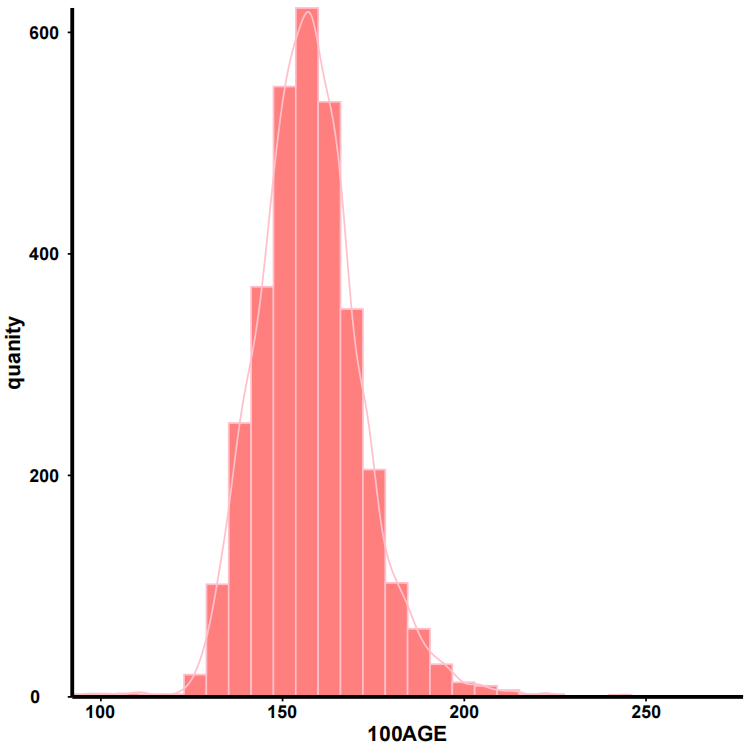

欢迎使用基因组选择技术平台
一站式基因组数据分析与遗传评估解决方案
参数面板
当前工具：数据查看
production_data_202507.xlsx
2.4 MB
上传进度
0%
过滤选项
至
当前工具：表型数据-可视化-直方图
当前工具：表型数据-可视化-箱线图
当前工具：表型数据-可视化-散点图
当前工具：测序流程
🧪
测序数据分析流程
请从左侧选择具体的测序分析工具
⚡
fastp过滤
📊
bwa对比
🔢
samtools排序
📈
qualimap质量统计
当前工具：fastp过滤
当前工具：bwa对比
当前工具：samtools排序
当前工具：qualimap质量统计
当前工具：标重去重GATK
当前工具：bamlist索引
当前工具：basevar基因型判定
当前工具：stitch填充
当前工具：plink质控score
当前工具：plink过滤
当前工具：系谱处理-系谱质控
当前工具：系谱处理-系谱个体排序
当前工具：系谱处理-亲缘关系矩阵构建
当前工具：GWAS-单性状模型-G矩阵构建
当前工具：遗传评估-单性状模型-全流程自动化分析
当前工具：遗传评估-多性状模型-两性状遗传相关计算
当前工具：beagle填充
当前工具：芯片数据处理-plink过滤
当前工具：芯片流程
质控参数：
0-0.5
0-1
0-1
0-1
高级选项
数据查看结果
可视化-直方图结果

fastp过滤结果
过滤统计
原始读取数：10,245,789
过滤后读取数：9,876,543
过滤率：3.6%
平均读取长度：145 bp
质量统计
平均Q30：92.5%
平均GC含量：45.2%
接头含量：0.8%
质量分布图
bwa对比结果
比对统计
总读取数：9,876,543
比对成功数：9,765,432
比对率：98.9%
唯一比对率：95.2%
覆盖度统计
平均覆盖深度：32.5x
基因组覆盖度：98.1%
平均插入片段长度：350 bp
plink过滤结果
✅
分析完成
工具运行成功，文件已生成至/nfs5/miaozhengao/display文件夹中。
GWAS-单性状模型-G矩阵分析结果
✅
分析完成
G矩阵构建完成，文件生成至/nfs5/miaozhengao/display2文件夹中。
遗传评估—多性状模型-两性状遗传相关分析结果
性状1：100AGE
性状2：100BF
固定效应：SEX C_birth
Vg11（性状1遗传方差）：131.886000
Vg22（性状2遗传方差）：0.963397
Vg12（遗传协方差）：5.771750
遗传相关 rg：0.512042
✅
分析完成
相关文件已生成至/nfs5/miaozhengao/display3文件夹中。
${getToolName(toolId)}结果
✅
分析完成
工具运行成功，结果已生成。
🔄
正在运行 ${getToolName(toolId)}...
请稍候，正在处理...